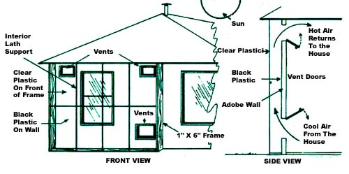
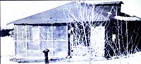

The Solar Heater Pays For Itself
How this family built a solar-powered heating unit for $25.
Mother Earth News
September/October 1976
Contrary to what you might think, solar heating installations don't have to be complicated and expensive in order to do the job. We proved this to ourselves not long ago when we outfitted a home-an old adobe dwelling located high (8,000 feet) in the mountains of northern New Mexico-with a bare-bones simple, yet highly effective, $25 solar heating system.
When we took it over, the house was nothing but a drafty, unfinished, 750-square-foot adobe lodge that featured lots of window area and walls with an equivalent insulation value of less than an inch of fiberglass. Not exactly what you'd call a cozy shelter in which to brave-19° New Mexican winters!
Fortunately, the building's roof was insulated with a full six inches of fiberglass ... but the floor-like the walls-had no insulation, and we were told that during the winter previous to our arrival the house's occupants had spent $60 per month for propane to keep the place warm.
That was all the incentive we needed to begin looking for a way to improve the dwelling's heating efficiency. So we pondered the situation for a while ... and ultimately decided to [1] put in a wood-burning stove and [2] rig up a large solar collector for the south wall of the structure. (Because we were rentingnot buying-the place, we felt it wouldn't be feasible for us to go to the expense of insulating the entire building . . . even though that would've solved the better part of the heating problem.)
Building the collector was a cinch. All we did was [A] tack up a sheet of black plastic to the outside of the south wall, [B] construct a 9' X 14' framework of 1" X 6" boards, [C] cover the outside face of this framework with see-through 4-mil plastic (we put a few lath reinforcements between the one-by-sixes to help the plastic withstand the strong mountain winds), and [D] mount this stud-wall-like frame to the side of the house, right over the black plastic.
As you can see from the accompanying diagram, we also cut two 12" X 15" vent holes in the wall near the ceiling and a 24" square opening in the wall near the floor, and placed doors over all three openings. (These holes vent the collector to the house, but not to the outside.)
Thus, whenever Ole Sol shines down on our humble abode and we need some extra room heat, all we have to do is throw open the hatches, sit back, and let the collector (aided by natural convection) do its work. Cool house air enters the collector through the 24" opening at the bottom of the wall ... rises as it's warmed by the sun's rays ... and exits back into the house through either of the two top vents (which are located in two different rooms) with enough force to flutter a few ribbons. TA DA! Passive solar heat!
The beauty of this design is that it's simple (no expensive pumps, differential thermostats, copper tubing, etc.), and yet it works. The setup's only drawback is that it doesn't keep us warm for very long ... because at night, the heat passes right through our adobe walls. (The only remedy for this, of course, is insulation.)
Still, we're proud to report that our solar heater now provides us with onethird of all the Btu's we consume in space heating, which-in terms of propane-translates out to about $20 a month. Hence, you can figure the pay-back time on our whole system at around five weeks ... a far cry from the five to ten years it takes most solar heating installations to pay for themselves.
It's true that we could have increased the collector's efficiency and durability by using glass in place of plastic ... but this would've been-for our budget-much too expensive. Plastic works fine for us (and when it does need replacing, a new sheet should cost only about $5.00).
We found this a fun and rewarding-to ourselves AND the planet-experiment So much so, that we're already at work constructing a solarheated house of our own!

Most "conventional" solar heating systems cost upwards of $2,500 to install the Gilman Family in the mountains of New Mexico-however-designed and built their own sun powerd heating unit for $35...and it works as well ans any!
|

|
|